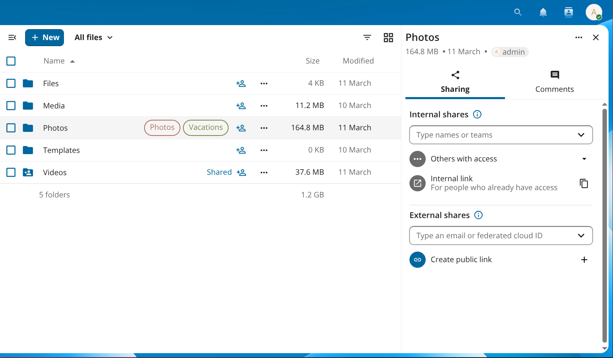
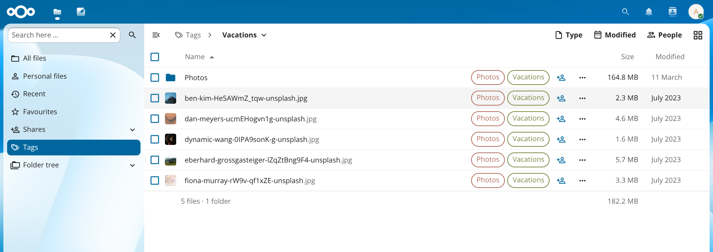
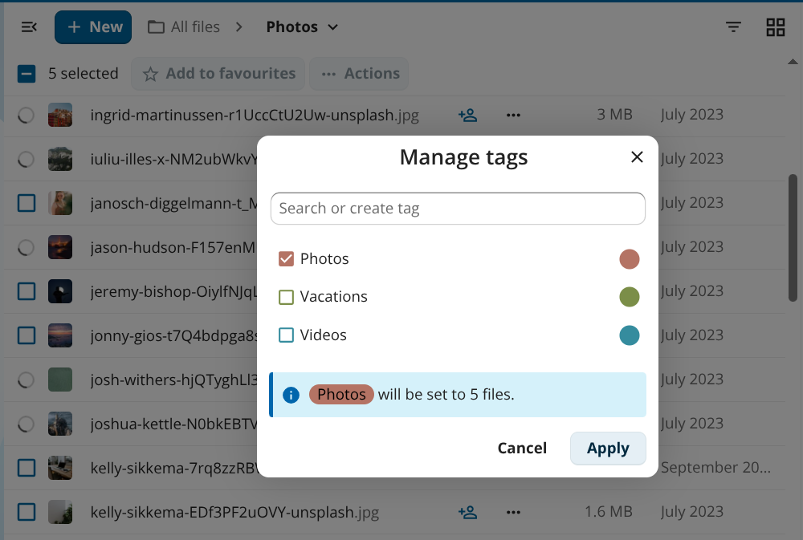

System-Schlagworte
System-Schlagworte sind serverweite Bezeichnungen, die Sie Dateien und Ordnern zuweisen können, um sie zu organisieren, Ihre Dateiliste zu filtern und automatisierte Abläufe wie Aufbewahrungsregeln und Zugriffskontrolle zu steuern.
Schlagworte werden in der App Dateien direkt in den Zeilen von Dateien und Ordnern angezeigt, sodass Sie auf einen Blick sehen, welche Bezeichnungen zugewiesen sind:

Abbildung 1: Schlagworte werden direkt bei Dateien und Ordnern angezeigt.
Schlagworte werden von der Administration in den Servereinstellungen erstellt. Je nach Serverkonfiguration können auch normale Benutzer Schlagworte erstellen – die Administration kann das Erstellen von Schlagworten auf Administratoren beschränken.
Zugriffsstufen von Schlagworten
Jedes Schlagwort hat eine von drei Zugriffsstufen, die steuern, was normale Benutzer sehen und tun können:
Stufe |
Für Benutzer sichtbar |
Benutzer können zuweisen / entfernen |
|---|---|---|
Öffentlich |
Ja |
Ja |
Eingeschränkt |
Ja |
Nein |
Unsichtbar |
Nein |
Nein |
Eingeschränkte und unsichtbare Schlagworte werden von der Administration für automatisierte Abläufe verwendet. Sie können diese nicht umgehen, indem Sie das Schlagwort selbst entfernen.
Durchsuchen von Dateien nach Schlagwort
Klicken Sie oben links in der App Dateien auf das Navigationssymbol (≡), um den Navigationsbereich zu öffnen, und klicken Sie dann auf Schlagworte. Die Ansicht listet alle für Sie sichtbaren Schlagworte auf. Klicken Sie auf den Namen eines Schlagworts, um alle Dateien und Ordner zu sehen, denen dieses Schlagwort zugewiesen ist.

Abbildung 2: Ein Klick auf ein Schlagwort im Navigationsbereich filtert die Dateiliste auf Dateien mit diesem Schlagwort.
Dateien Schlagworte zuweisen
Sie können Schlagworte einzelnen Dateien oder mehreren ausgewählten Dateien in einem Schritt zuweisen oder davon entfernen.
Einzeldatei
Klicken Sie auf das Drei-Punkte-Aktionsmenü (…) neben einer Datei oder einem Ordner und wählen Sie Details, um die Detail-Seitenleiste zu öffnen.
In der Detail-Seitenleiste auf Schlagworte hinzufügen klicken.
Geben Sie den Namen eines Schlagworts in das Suchfeld ein und wählen Sie das Schlagwort aus der Liste aus.
Klicken Sie außerhalb der Auswahl, um sie zu schließen. Änderungen werden sofort gespeichert.
Um ein Schlagwort zu entfernen, öffnen Sie dieselbe Auswahl und klicken Sie auf das × neben dem Namen des Schlagworts.
Bemerkung
Für normale Benutzer werden in der Auswahl nur öffentliche Schlagworte angezeigt. Eingeschränkte und unsichtbare Schlagworte können nur von der Administration zugewiesen werden.
Mehrere Dateien
Wählen Sie zwei oder mehr Dateien aus, indem Sie das Kontrollkästchen links in jeder Zeile anklicken.
Klicken Sie in der Symbolleiste über der Dateiliste auf ··· Aktionen und wählen Sie dann Schlagworte verwalten.
Aktivieren oder deaktivieren Sie im angezeigten Dialog die gewünschten Schlagworte. Eine Infozeile zeigt, wie die Änderung auf die ausgewählten Dateien angewendet wird.
Auf Anwenden klicken.

Abbildung 3: Mit „Schlagworte verwalten“ können Sie Schlagworte für mehrere Dateien gleichzeitig zuweisen oder entfernen.
Schlagworte erstellen und verwalten
Wenn die Administration das Erstellen von Schlagworten nicht eingeschränkt hat, können Sie ein neues Schlagwort direkt im Dialog Schlagworte verwalten oder in der Schlagwortauswahl für einzelne Dateien erstellen: Geben Sie im Feld Schlagwort suchen oder erstellen einen neuen Namen ein und wählen Sie die angezeigte Option Schlagwort erstellen.
Administratoren erstellen, benennen und löschen Schlagworte unter Verwaltungseinstellungen ‣ Server. Einzelheiten zur Verwaltung von Schlagworten und zu Befehlszeilenwerkzeugen finden Sie im Abschnitt Automated tagging des Administrationshandbuchs.